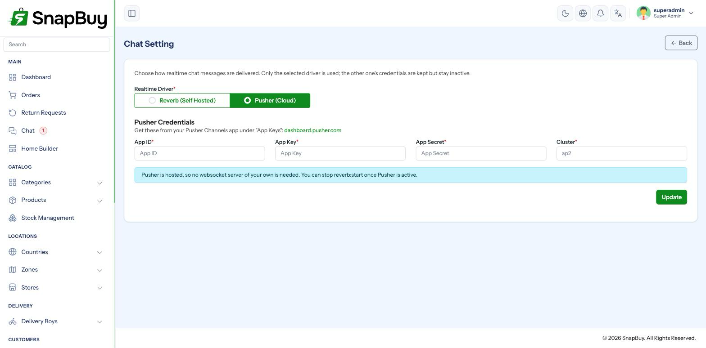
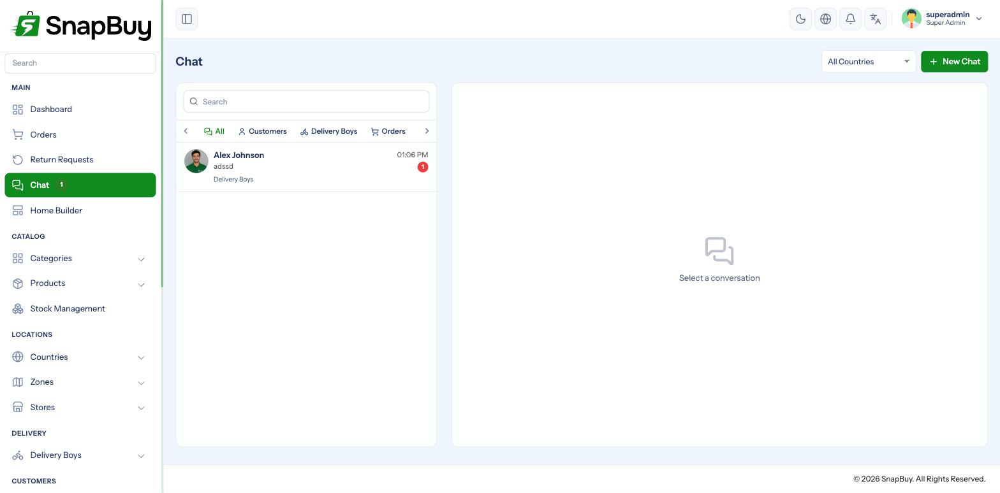

Chat Settings (Reverb / Pusher)
Setup Guide step 8 of 9. Menu path: Settings → Chat Settings
Chat lets customers, delivery boys and admins message each other in real time — a customer asking the rider to wait, or support resolving an order problem without a phone call.
Real-time messaging needs a WebSocket server. SnapBuy supports two:
| Driver | Cost | Runs where | Best for |
|---|---|---|---|
| Reverb | Free | Your own server, as a long-running process | Most installations |
| Pusher | Paid, with a free tier | Pusher's cloud | Avoiding server administration |

Reverb is free but needs a managed process
Reverb needs a permanently running process and an open port. Your VPS provides both, so Reverb is the cheaper choice for most installations. Choose Pusher if you would rather not manage a long-running service, or if your host blocks the WebSocket port.
Option A — Reverb (self-hosted)
Reverb ships with SnapBuy. Installation generates credentials automatically if they were empty, so the fields are usually already filled in.
| Field | Notes |
|---|---|
| App ID | Generated at install |
| App Key | Generated at install |
| App Secret | Generated at install |
| Host | Your domain, or localhost in development |
| Port | 9090 by default |
| Scheme | http or https |
Credentials alone are not enough
The Setup Guide's Chat step goes green as soon as the credentials are present. It does not verify the Reverb process is running. A green step with a dead server means chat silently does nothing.
Start the Reverb server
php artisan reverb:startThat stops when you close the terminal. For production, keep it alive with Supervisor.
Create /etc/supervisor/conf.d/snapbuy-reverb.conf:
[program:snapbuy-reverb]
process_name=%(program_name)s
command=php /var/www/snapbuy/artisan reverb:start --host=0.0.0.0 --port=9090
autostart=true
autorestart=true
user=www-data
redirect_stderr=true
stdout_logfile=/var/www/snapbuy/storage/logs/reverb.log
stopwaitsecs=3600Then:
sudo supervisorctl reread
sudo supervisorctl update
sudo supervisorctl start snapbuy-reverb
sudo supervisorctl statusOpen the port
sudo ufw allow 9090Proxy WebSockets through HTTPS
Browsers on an HTTPS page refuse to open an insecure ws:// connection. Proxy the WebSocket through Nginx so it is served over wss://:
location /app {
proxy_pass http://127.0.0.1:9090;
proxy_http_version 1.1;
proxy_set_header Upgrade $http_upgrade;
proxy_set_header Connection "Upgrade";
proxy_set_header Host $host;
proxy_read_timeout 60s;
}Then set Scheme to https and Port to 443 in the panel.
Mixed content kills chat silently
An HTTPS panel talking to ws://yourdomain:9090 is blocked by the browser. Nothing appears in the panel — chat just never connects. Check the browser console for a blocked-insecure-connection message.
Option B — Pusher (hosted)
Nothing to run or keep alive.
- Sign up at pusher.com and open Channels.
- Create an app, choosing the cluster closest to your customers.
- Open App Keys.
| SnapBuy field | Pusher value |
|---|---|
| App ID | app_id |
| App Key | key |
| App Secret | secret |
| Cluster | cluster — for example ap2, eu, us2 |
The cluster must match exactly
A correct key with the wrong cluster fails to connect with no useful error. Copy the cluster string from the same App Keys screen as the credentials.
Pick the cluster nearest your customers
Cluster choice sets message latency. Serving India from a US cluster adds noticeable delay to every message.
Pusher's free tier covers a limited number of daily messages and concurrent connections — fine for a small store, worth watching as you grow.
Verify chat works
- Save the settings, then visit
/clear. - Open Chat in the panel.
- From the customer app or web portal, send a message on an order.
- It should appear in the panel without refreshing.

Messages appear only after refresh?
The message was stored but not broadcast — the WebSocket connection is down. For Reverb, check the process is running and the port is open. For Pusher, check the cluster.
Troubleshooting
| Symptom | Cause | Fix |
|---|---|---|
| Setup Guide Chat step red | A credential field is blank | Fill all fields for the selected driver |
| Step green, chat still dead | Reverb process not running | sudo supervisorctl status, then start it |
| Works locally, not in production | Mixed content — ws:// on an HTTPS page | Proxy through Nginx, set scheme to https |
| Connection refused | Port 9090 closed | sudo ufw allow 9090 |
| Pusher connects then drops | Wrong cluster | Match the cluster on the App Keys screen |
| Chat stopped after moving hosts | Reverb process not started on the new server | Recreate the Supervisor entry |
| Messages delayed by seconds | Distant Pusher cluster | Recreate the app on a nearer cluster |
| Nothing changed after saving | Cached config | Visit /clear |
Checklist
- Driver chosen to suit the hosting
- All credentials filled
- Reverb: process running under Supervisor
- Reverb: port open, or proxied through Nginx over
wss:// - Pusher: cluster matches the dashboard
- Live message tested end to end without refreshing